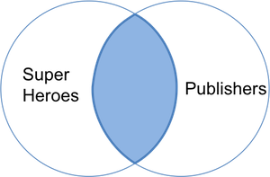
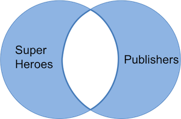
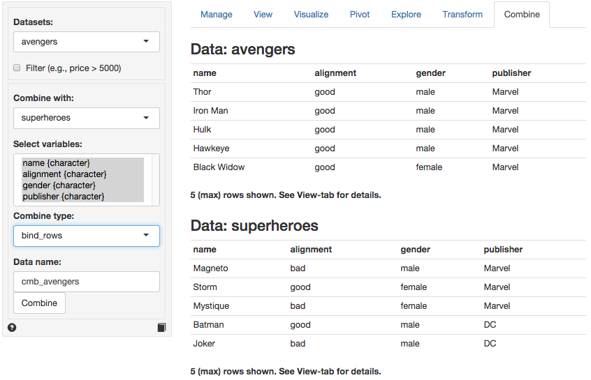

Data > Combine
Combine two datasets
There are six join (or merge) options available in Radiant from the dplyr package developed by Hadley Wickham and Romain Francois on GitHub.
The examples below are adapted from Cheatsheet for dplyr join functions by Jenny Bryan and focus on three small datasets, superheroes, publishers, and avengers, to illustrate the different join types and other ways to combine datasets in R and Radiant. The data is also available in csv format through the links below:
| name | alignment | gender | publisher |
|---|---|---|---|
| Magneto | bad | male | Marvel |
| Storm | good | female | Marvel |
| Mystique | bad | female | Marvel |
| Batman | good | male | DC |
| Joker | bad | male | DC |
| Catwoman | bad | female | DC |
| Hellboy | good | male | Dark Horse Comics |
| publisher | yr_founded |
|---|---|
| DC | 1934 |
| Marvel | 1939 |
| Image | 1992 |
In the screen-shot of the Data > Combine tab below we see the two datasets. The tables share the variable publisher which is automatically selected for the join. Different join options are available from the Combine type dropdown. You can also specify a name for the combined dataset in the Data name text input box.

Inner join (superheroes, publishers)
If x = superheroes and y = publishers:
An inner join returns all rows from x with matching values in y, and all columns from both x and y. If there are multiple matches between x and y, all match combinations are returned.
| name | alignment | gender | publisher | yr_founded |
|---|---|---|---|---|
| Magneto | bad | male | Marvel | 1939 |
| Storm | good | female | Marvel | 1939 |
| Mystique | bad | female | Marvel | 1939 |
| Batman | good | male | DC | 1934 |
| Joker | bad | male | DC | 1934 |
| Catwoman | bad | female | DC | 1934 |
In the table above we lose Hellboy because, although this hero does appear in superheroes, the publisher (Dark Horse Comics) does not appear in publishers. The join result has all variables from superheroes, plus yr_founded, from publishers. We can visualize an inner join with the venn-diagram below:

The R(adiant) commands are:
# Radiant
combinedata("superheroes", "publishers", by = "publisher", type = "inner_join")
# R
inner_join(superheroes, publishers, by = "publisher")Left join (superheroes, publishers)
A left join returns all rows from x, and all columns from x and y. If there are multiple matches between x and y, all match combinations are returned.
| name | alignment | gender | publisher | yr_founded |
|---|---|---|---|---|
| Magneto | bad | male | Marvel | 1939 |
| Storm | good | female | Marvel | 1939 |
| Mystique | bad | female | Marvel | 1939 |
| Batman | good | male | DC | 1934 |
| Joker | bad | male | DC | 1934 |
| Catwoman | bad | female | DC | 1934 |
| Hellboy | good | male | Dark Horse Comics | NA |
The join result contains superheroes with variable yr_founded from publishers. Hellboy, whose publisher does not appear in publishers, has an NA for yr_founded. We can visualize a left join with the venn-diagram below:

The R(adiant) commands are:
# Radiant
combinedata("superheroes", "publishers", by = "publisher", type = "left_join")
# R
left_join(superheroes, publishers, by = "publisher")Right join (superheroes, publishers)
A right join returns all rows from y, and all columns from y and x. If there are multiple matches between y and x, all match combinations are returned.
| name | alignment | gender | publisher | yr_founded |
|---|---|---|---|---|
| Batman | good | male | DC | 1934 |
| Joker | bad | male | DC | 1934 |
| Catwoman | bad | female | DC | 1934 |
| Magneto | bad | male | Marvel | 1939 |
| Storm | good | female | Marvel | 1939 |
| Mystique | bad | female | Marvel | 1939 |
| NA | NA | NA | Image | 1992 |
The join result contains all rows and columns from publishers and all variables from superheroes. We lose Hellboy, whose publisher does not appear in publishers. Image is retained in the table but has NA values for the variables name, alignment, and gender from superheroes. Notice that a join can change both the row and variable order so you should not rely on these in your analysis. We can visualize a right join with the venn-diagram below:

The R(adiant) commands are:
# Radiant
combinedata("superheroes", "publishers", by = "publisher", type = "right_join")
# R
right_join(superheroes, publishers, by = "publisher")Full join (superheroes, publishers)
A full join combines two datasets, keeping rows and columns that appear in either.
| name | alignment | gender | publisher | yr_founded |
|---|---|---|---|---|
| Magneto | bad | male | Marvel | 1939 |
| Storm | good | female | Marvel | 1939 |
| Mystique | bad | female | Marvel | 1939 |
| Batman | good | male | DC | 1934 |
| Joker | bad | male | DC | 1934 |
| Catwoman | bad | female | DC | 1934 |
| Hellboy | good | male | Dark Horse Comics | NA |
| NA | NA | NA | Image | 1992 |
In this table we keep Hellboy (even though Dark Horse Comics is not in publishers) and Image (even though the publisher is not listed in superheroes) and get variables from both datasets. Observations without a match are assigned the value NA for variables from the other dataset. We can visualize a full join with the venn-diagram below:

The R(adiant) commands are:
# Radiant
combinedata("superheroes", "publishers", by = "publisher", type = "full_join")
# R
full_join(superheroes, publishers, by = "publisher")Semi join (superheroes, publishers)
A semi join keeps only columns from x. Whereas an inner join will return one row of x for each matching row of y, a semi join will never duplicate rows of x.
| name | alignment | gender | publisher |
|---|---|---|---|
| Batman | good | male | DC |
| Joker | bad | male | DC |
| Catwoman | bad | female | DC |
| Magneto | bad | male | Marvel |
| Storm | good | female | Marvel |
| Mystique | bad | female | Marvel |
We get a similar table as with inner_join but it contains only the variables in superheroes. The R(adiant) commands are:
# Radiant
combinedata("superheroes", "publishers", by = "publisher", type = "semi_join")
# R
semi_join(superheroes, publishers, by = "publisher")Anti join (superheroes, publishers)
An anti join returns all rows from x without matching values in y, keeping only columns from x
| name | alignment | gender | publisher |
|---|---|---|---|
| Hellboy | good | male | Dark Horse Comics |
We now get only Hellboy, the only superhero not in publishers and we do not get the variable yr_founded either. We can visualize an anti join with the venn-diagram below:

Dataset order
Note that the order of the datasets selected may matter for a join. If we setup the Data > Combine tab as below the results are as follows:

Inner join (publishers, superheroes)
| publisher | yr_founded | name | alignment | gender |
|---|---|---|---|---|
| DC | 1934 | Batman | good | male |
| DC | 1934 | Joker | bad | male |
| DC | 1934 | Catwoman | bad | female |
| Marvel | 1939 | Magneto | bad | male |
| Marvel | 1939 | Storm | good | female |
| Marvel | 1939 | Mystique | bad | female |
Every publisher that has a match in superheroes appears multiple times, once for each match. Apart from variable and row order, this is the same result we had for the inner join shown above.
Left and Right join (publishers, superheroes)
Apart from row and variable order, a left join of publishers and superheroes is equivalent to a right join of superheroes and publishers. Similarly, a right join of publishers and superheroes is equivalent to a left join of superheroes and publishers.
Full join (publishers, superheroes)
As you might expect, apart from row and variable order, a full join of publishers and superheroes is equivalent to a full join of superheroes and publishers.
Semi join (publishers, superheroes)
| publisher | yr_founded |
|---|---|
| Marvel | 1939 |
| DC | 1934 |
With semi join the effect of switching the dataset order is more clear. Even though there are multiple matches for each publisher only one is shown. Contrast this with an inner join where “If there are multiple matches between x and y, all match combinations are returned.” We see that publisher Image is lost in the table because it is not in superheroes.
Anti join (publishers, superheroes)
| publisher | yr_founded |
|---|---|
| Image | 1992 |
Only publisher Image is retained because both Marvel and DC are in superheroes. We keep only variables in publishers.
Additional tools to combine datasets (avengers, superheroes)
When two datasets have the same columns (or rows) there are additional ways in which we can combine them into a new dataset. We have already used the superheroes dataset and will now try to combine it with the avengers data. These two datasets have the same number of rows and columns and the columns have the same names.
In the screen-shot of the Data > Combine tab below we see the two datasets. There is no need to select variables to combine the datasets here. Any variables in Select variables are ignored in the commands below. Again, you can specify a name for the combined dataset in the Data name text input box.

Bind rows
| name | alignment | gender | publisher |
|---|---|---|---|
| Thor | good | male | Marvel |
| Iron Man | good | male | Marvel |
| Hulk | good | male | Marvel |
| Hawkeye | good | male | Marvel |
| Black Widow | good | female | Marvel |
| Captain America | good | male | Marvel |
| Magneto | bad | male | Marvel |
| Magneto | bad | male | Marvel |
| Storm | good | female | Marvel |
| Mystique | bad | female | Marvel |
| Batman | good | male | DC |
| Joker | bad | male | DC |
| Catwoman | bad | female | DC |
| Hellboy | good | male | Dark Horse Comics |
If the avengers dataset were meant to extend the list of superheroes we could just stack the two datasets, one below the other. The new datasets has 14 rows and 4 columns. Due to a coding error in the avengers dataset (i.e.., Magneto is not an Avenger) there is a duplicate row in the new combined dataset. Something we probably don’t want.
The R(adiant) commands are:
# Radiant
combinedata("avengers", "superheroes", type = "bind_rows")
# R
bind_rows(avengers, superheroes)Bind columns
| name | alignment | gender | publisher | name | alignment | gender | publisher |
|---|---|---|---|---|---|---|---|
| Thor | good | male | Marvel | Magneto | bad | male | Marvel |
| Iron Man | good | male | Marvel | Storm | good | female | Marvel |
| Hulk | good | male | Marvel | Mystique | bad | female | Marvel |
| Hawkeye | good | male | Marvel | Batman | good | male | DC |
| Black Widow | good | female | Marvel | Joker | bad | male | DC |
| Captain America | good | male | Marvel | Catwoman | bad | female | DC |
| Magneto | bad | male | Marvel | Hellboy | good | male | Dark Horse Comics |
If the dataset had different columns for the same superheroes we could combine the two datasets, side by side. In radiant you will see an error message if you try to bind these columns because they have the same name. Something that we should always avoid. The method can be useful if we know the order of the row ids of two dataset are the same but the columns are all different.
Intersect
A good way to check if two datasets with the same columns have duplicate rows is to choose intersect from the Combine type dropdown. There is indeed one row that is identical in the avengers and superheroes data (i.e., Magneto).
The R(adiant) commands are the same as shown above, except you will need to replace bind_rows by intersect.
Union
|
|
|
|
|
|
|
|
A union of avengers and superheroes will combine the datasets but will omit duplicate rows (i.e., it will keep only one copy of the row for Magneto). Likely what we want here.
The R(adiant) commands are the same as shown above, except you will need to replace bind_rows by union.
Setdiff
| name | alignment | gender | publisher |
|---|---|---|---|
| Thor | good | male | Marvel |
| Iron Man | good | male | Marvel |
| Hulk | good | male | Marvel |
| Hawkeye | good | male | Marvel |
| Black Widow | good | female | Marvel |
| Captain America | good | male | Marvel |
| Magneto | bad | male | Marvel |
Finally, a setdiff will keep rows from avengers that are not in superheroes. If we reverse the inputs (i.e., choose superheroes from the Datasets dropdown and superheroes from the Combine with dropdown) we will end up with all rows from superheroes that are not in avengers. In both cases the entry for Magneto will be omitted.
The R(adiant) commands are the same as shown above, except you will need to replace bind_rows by setdiff.
For additional discussion see http://cran.r-project.org/web/packages/dplyr/vignettes/two-table.html